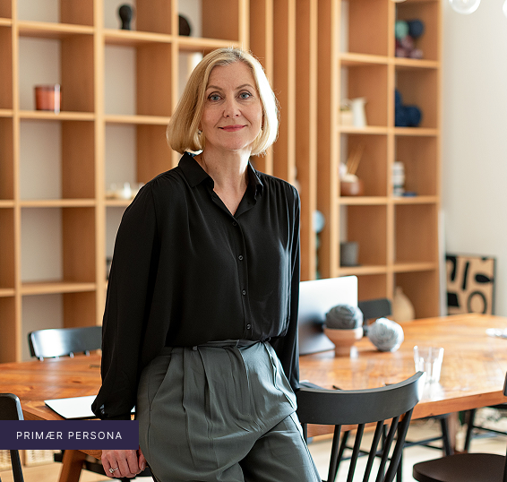
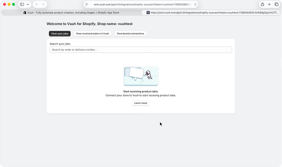
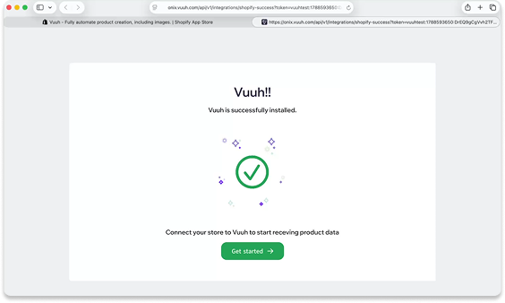
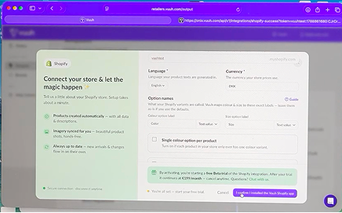
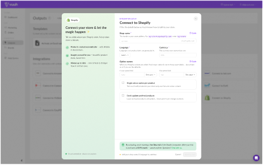
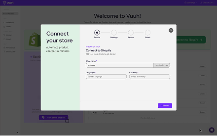
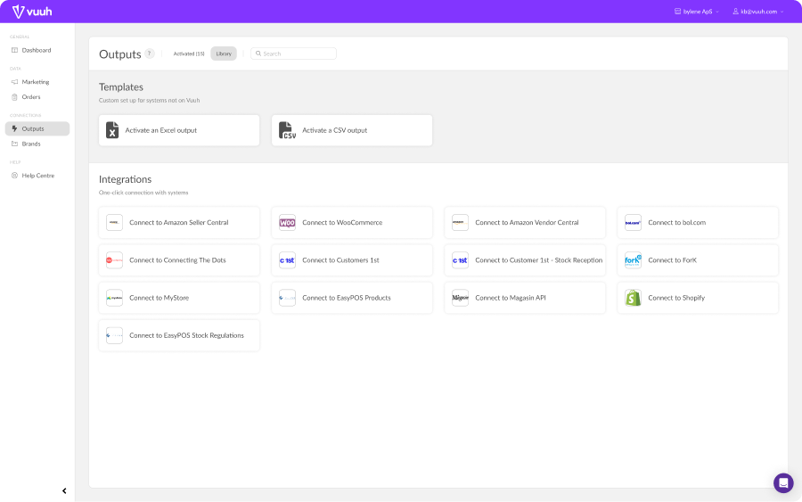
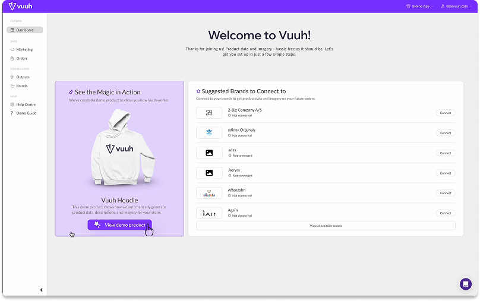

Vuuh.
En start, der viser vejen.
Vuuh henter produktdata og billeder fra brands og sender dem direkte videre til butikkens webshop. Men nye brugere gik i stå, før de kom i gang: under installationen, forbindelsen til Shopify og den første ordre.
Vi evaluerede onboardingen, samlede fundene i en UX Audit Summary og redesignede tre dele af flowet i en interaktiv prototype.
Jeg havde særligt fokus på modalerne i onboardingen. AI er brugt som sparringspartner.
En start med flere spørgsmål end svar.
Charlotte ejer en lille modebutik med webshop, men apps og integrationer er ikke en del af hendes hverdag. Efter installationen tror hun, at opsætningen er færdig, selvom forbindelsen til Shopify mangler. Hun blev vores primære persona. Emma, der selv installerer apps, var den sekundære: for hende måtte guidningen aldrig stå i vejen.

Charlotte
- 01Overvældet af en kompliceret onboarding.
- 02Ved ikke, hvor oplysningerne findes.
- 03Forvirret i skiftet mellem Shopify og Vuuh.
- 01Sikker på, at Vuuh er sat korrekt op.
- 02Tydelige trin-for-trin-instruktioner.
- 03Nem adgang til hjælp, når hun er i tvivl.
Hvor rejsen gik i stå.
Vi fulgte Charlotte gennem onboardingen i en kognitiv gennemgang og holdt skærmene op mod Nielsens heuristikker. Systemet fortalte sjældent, hvad der var sket, og vigtig information druknede i tekst. Fundene blev til tre fokusområder og ét designmål.
Manglende overblik
Hvor er jeg, og hvad er næste skridt?
Utilstrækkelig feedback
Gjorde jeg det rigtigt?
Uklart system
Hvad betyder valgene og begreberne?
En onboarding, der føles overskuelig, guidet og tryg, så brugeren aldrig er i tvivl om, hvor de er, hvad de skal gøre, eller hvad der sker.
En onboarding, der viser vejen.
Successiden bekræfter nu installationen og peger på ét næste skridt. Forbindelsen til Shopify er samlet i én guide med fire trin, og en demo-guide tager brugeren gennem den første download. De største problemer lå i overgangene mellem systemerne, og hver ændring svarer direkte på et af vores tre fund: manglende overblik, utilstrækkelig feedback og et uklart system.
Tydeligere feedback


Tydeligere struktur



Klar næste handling: demo-guiden


Guidningen fjerner tvivl og giver et trygt første møde med Vuuh — både for Charlotte og for mere selvkørende brugere som Emma.
Ikke kun simpelt at se på, men simpelt at bruge.
Vi valgte en trinvis og guidet proces frem for at vise alt på én gang, så brugeren får den information, der er relevant, når de faktisk har brug for den. Vi designede primært til Charlotte, men Emma kan altid skippe guiden. Det handler ikke kun om at gøre løsningen mere simpel visuelt, men om at gøre selve oplevelsen mere simpel. Et naturligt næste skridt vil være at teste prototypen med rigtige butiksejere.
Flere butikker, der kommer i gang.
Brugeren bliver ikke efterladt et sted, hvor de selv skal regne ud, hvad Vuuh kan – vi viser det for dem. Når flere butiksejere som Charlotte kommer trygt igennem opsætningen, kan Vuuh få flere aktive kunder. Vurderingen bygger på, at de største problemer i vores undersøgelse lå netop i opsætningen.
- Caroline Majlandt Clorius
- Freia Mandrup Krog
- Laura Lynge Nielsen
- Mia Poder Olesen
- Cecilie Vestergaard Andersen